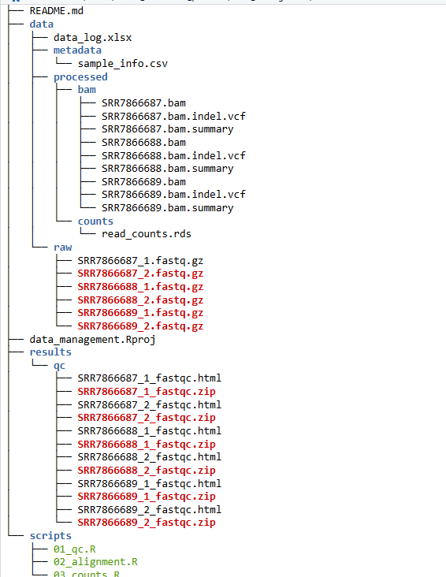
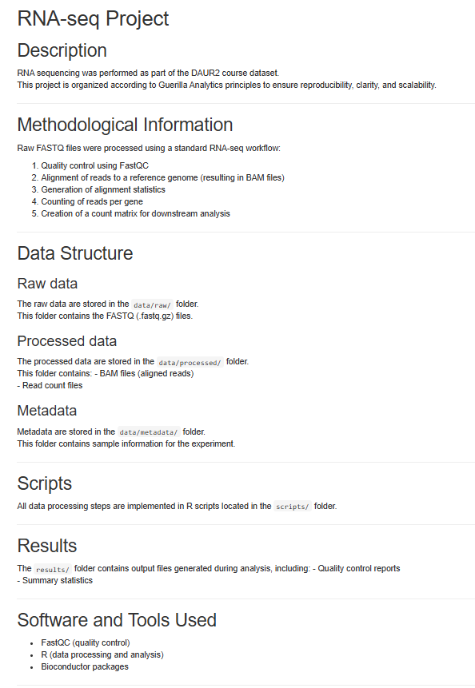

03_data_management
#Jinte van den Brink
Data Scientist (Biology & Life Sciences)
The Netherlands
GitHub: https://github.com/jintevdbrink-png
1 Profile
Motivated data scientist with a background in life sciences and a specialization in biological research. Experienced in data analysis, dashboard development, and applied research in biomedical contexts.
2 Experience
3 Skills
5 Future career goal
In the next one to two years, I hope to have finished my studies and to be working in a laboratory where cancer research is carried out. Ideally, I would like a role that combines both practical lab work and data science. My preferred balance would be around 25% lab work and 75% data analysis and computer-based work.
6 Current skills and experience
At the moment, I have experience in biology and medical research. I also have basic experience with programming languages such as R and Bash, which I have started using for data analysis tasks and simple workflows. This gives me a good starting point for further development in data science within a biological context.
7 Skills to develop
Although I already have a foundation, I still need to improve how I apply these skills to real research problems. I would especially like to become more confident in working with larger datasets and in using my programming skills in more complete research projects. Gaining more experience in combining biology with data science will be an important next step for me.
8 Data managment
In this assignment, the principles of Guerilla Analytics were applied to organize RNA-sequencing data in a structured and reproducible way. Instead of downloading all files, a local directory structure was created with placeholder files representing the original data. A screenshot of the README file is also included.
The structure of this portfolio was also created following Guerilla Analytics principles. ## RNA-sequencing

Figure 1: the structure of the project for the RNA-seqencing assignment

Figure 2: a screenshot of the README file for the RNA-sequencing assignment